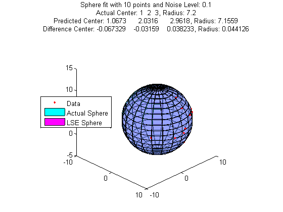

Radius_act=7.2;
Center_act=[1,2,3];
NoiseScale=0.1;
Angles=rand(10,2)*diag([-pi/3,2*pi]);
Rot_z=@(ang) [cos(ang), -sin(ang), 0; sin(ang), cos(ang), 0; 0,0,1];
Rot_x=@(ang) [1,0,0; 0, cos(ang), -sin(ang); 0, sin(ang), cos(ang)];
X=zeros(size(Angles,1),3);
for becky=1:size(X,1)
X(becky,:)=([Radius_act,0,0]+NoiseScale*(rand(1,3)-.5))*...
Rot_z(Angles(becky,1))*Rot_x(Angles(becky,2))+Center_act;
end
[Center_LSE,Radius_LSE] = sphereFit(X);
figure(42);clf;
plot3(X(:,1),X(:,2),X(:,3),'r.')
hold on;daspect([1,1,1]);
[Base_X,Base_Y,Base_Z] = sphere(20);
surf(Radius_act*Base_X+Center_act(1),...
Radius_act*Base_Y+Center_act(2),...
Radius_act*Base_Z+Center_act(3),'faceAlpha',0.3,'Facecolor','c')
surf(Radius_LSE*Base_X+Center_LSE(1),...
Radius_LSE*Base_Y+Center_LSE(2),...
Radius_LSE*Base_Z+Center_LSE(3),'faceAlpha',0.3,'Facecolor','m')
title({['Sphere fit with ' num2str(size(X,1)) ' points and Noise Level: ' num2str(NoiseScale)];...
['Actual Center: ' num2str(Center_act) ', Radius: ' num2str(Radius_act)];...
['Predicted Center: ' num2str(Center_LSE) ', Radius: ' num2str(Radius_LSE)];...
['Difference Center: ' num2str(Center_act-Center_LSE),...
', Radius: ' num2str(Radius_act-Radius_LSE)]});
view([45,28])
legend({'Data','Actual Sphere','LSE Sphere'},'location','W')
